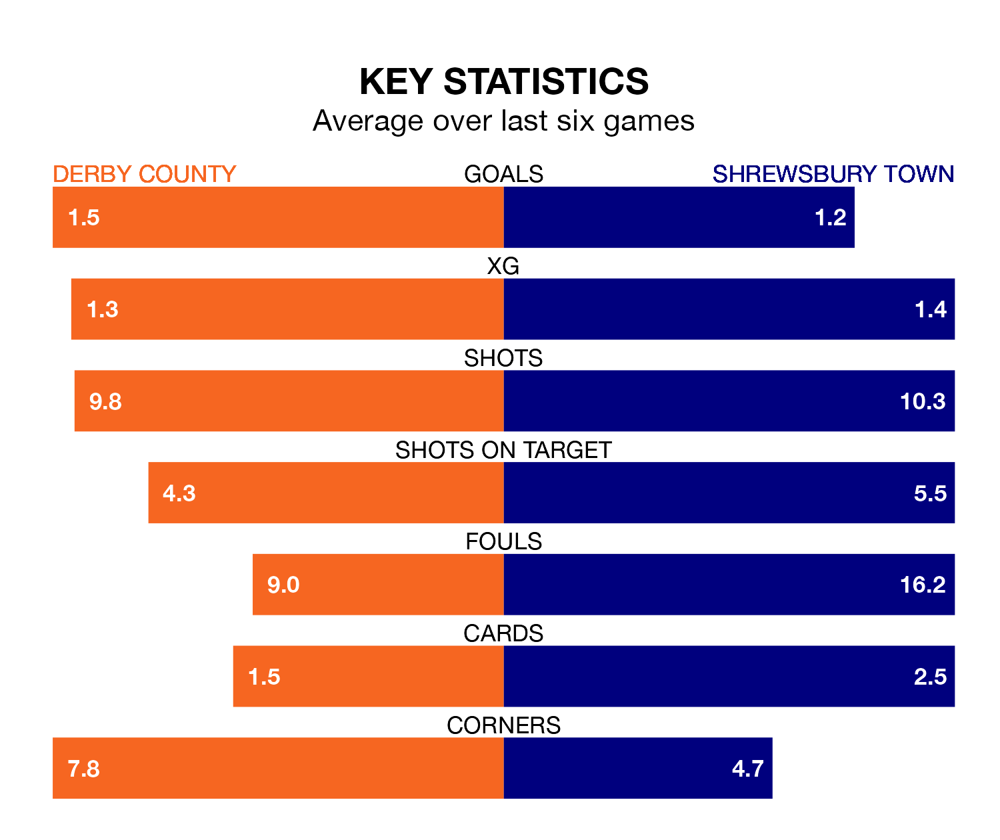

Derby County are heavy favourites to keep all three points at home in Saturday's kick-off against Shrewsbury Town.
The Rams, who sit second in EFL League One with 30 games played, are priced at 1.3 to seal victory at Pride Park Stadium.
Sitting 15 places and 26 points behind them in the table, Shrewsbury are 7.2 to win with *Betting Company*, while the draw is at 4.3.
With 21 goals in 30 games so far this season, Shrewsbury are the league's joint-third-lowest scorers with 0.7 goals per game. And they are conceding more than average, letting in 41 goals at a rate of 1.4 per game.
Derby, meanwhile, are above average scorers, with 1.8 goals per game, compared to a league average of 1.3. They have conceded 0.9 goals per game.
County's Nathaniel Mendez-Laing is the league's most creative player, racking up 10 assists in 30 appearances so far this season.
For Town, Jordan Shipley has set up the most goals, having laid on four assists in 20 games.
The Rams are in good form in EFL League One, with four wins and a draw from their last six games.
With two wins and four losses over that period, the Shrews' form is much worse – they have taken six points from 18, compared to the home team's 13.
In the last three years, Derby and Shrewsbury have played each other on three occasions. Shrewsbury won one of them and they drew the other.
Their last meeting was on October 21, when Shrewsbury won 1-0 at home.
Derby's last match was on February 3, a 1-0 win against Charlton Athletic, with Mendez-Laing getting the goal for the Rams.
Shrewsbury lost 2-1 against Cambridge United last time out, also on February 3, with Daniel Udoh on the scoresheet.
Updated: 14:59 (UTC), 05/02/24